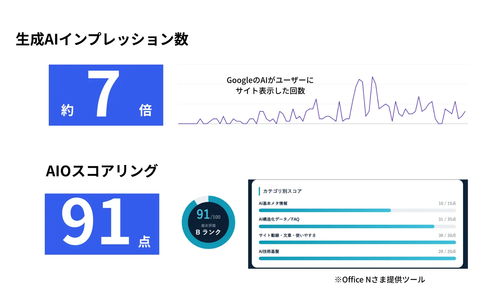

SEO・AIOのプロによる戦略設計と、AIを活用した記事制作。Google検索と生成AIの両輪で、見込み顧客との接点を効率的に増やします。
よくある課題
今の検索トレンド
ユーザーが検索結果を見る前に、AIの回答で判断を終えるケースが増えています。従来のSEOだけを積み上げても、AIの回答に自社が出てこなければ接触機会そのものを失います。いま必要なのは、この2つを同時に満たすことです。
SEO
検索結果で上位に出す
評価するのは、検索エンジンのアルゴリズム
AIO / LLMO
AIの回答に引用させる
評価するのは、回答を生成するAI
この2つは対立しません。「質問に対して、その場で結論が読み取れる構造になっているか」という一点で、検索エンジンと生成AIの評価軸はほぼ重なります。だからこそ、別々の施策として順番にやるのではなく、1本の記事を作る手順の中で同時に満たすのが最短です。
解決方法
キーワードの選定、記事の狙い、盛り込むべき一次情報の定義は、株式会社みずほ銀行でSEOを担当し、その後も多数のSEO支援実績を持つ専門人材が担当します。検索意図の読み方や、狙うキーワードの捨てどころは、経験の蓄積でしか精度が上がりません。
構成設計から本文生成、HTML入稿、内部リンク付与、sitemap.xmlとllms.txtの更新まではAIの日次タスクとして自動化します。本数がボトルネックでなくなるため、同じ予算で出せる記事数が何十倍にもなります。
構造化データも一問一答型の文章もllms.txtも、記事を作る手順に最初から組み込めば追加コストはほぼゼロです。後から対応しようとすると、増えた記事を全ページ直すことになります。100記事を超えてからでは手遅れです。
費用の考え方
弊社が自社サイトで実際に入稿したのがこの113記事で、月額15万円から貴社にも導入いただけます。
※ 相場はSEO支援会社が公開している2026年の費用相場データに基づきます。
支援内容
STEP 1 ／ 初期構築
STEP 2 ／ 月額運用
料金プラン
価格は税別です。初期費用には、SEO/AIO診断・キーワード設計・記事テンプレートと入稿フローの実装・構造化データ／llms.txt／sitemap自動更新の実装・数値台帳の構築が含まれます。最低契約期間は原則6か月（数値が動き始めるのは3〜4か月目が目安のため、この期間を設定しています）。
プランは横にスクロールできます →
オプション
運用を社内に移したい場合、タスクの手順化・社内担当者への実務研修・移管後の運用チェックまで対応します。対象範囲と体制によって工数が変わるため、料金は個別にお見積りします。
進行イメージ
実証事例


支援体制
LnXには、株式会社みずほ銀行にて決済プロダクトのWeb販売戦略とSEOを担当し、独立後も業種を問わず多数のSEO支援実績を持つ専門人材が在籍しています。オウンドメディアの初期構築とキーワード設計は、この担当者がすべて対応します。
加えて、事業会社側でWebマーケティング責任者を務めた経験から、記事数や順位といった指標だけでなく、問い合わせ・売上につながるかどうかを基準に設計します。AIが担うのは作業工程であり、何を書くべきかの判断はプロが行う体制です。
FAQ
SEOは検索結果で上位に表示させるための最適化、AIOはChatGPTやGoogleのAI概要といった生成AIの回答内に引用されるための最適化です。評価するのが検索エンジンのアルゴリズムか、回答を生成するAIかという違いがあります。本サービスでは両者を別施策に分けず、同じ記事制作フローの中で同時に満たす設計にしています。
キーワードの選定・記事の狙い・盛り込む一次情報といった判断は、株式会社みずほ銀行でSEOを担当し、その後も多数のSEO支援実績を持つ専門人材が担当します。AIが担当するのは構成設計から入稿までの作業工程です。判断は経験者、作業はAIという分業にしているため、本数と内容の質を両立できます。
1か月目は診断と設計、2か月目から入稿開始、数値が動き始めるのは3〜4か月目が目安です。検索エンジンと生成AIの双方に評価されるまでには一定の記事数と期間が必要なため、最低契約期間は原則6か月としています。
導入できます。初期構築の段階で既存サイトのSEO/AIO診断を行い、既存記事を活かしたキーワード設計と、構造化データやllms.txtの後付け実装を行います。むしろ記事がある程度たまっている状態のほうが、リライトによる短期の改善余地が大きいケースが多いです。
無料です。サイトURLをお送りいただければ、弊社のサイト改善担当が貴社サイトを診断し、AIOスコアと改善ポイントをまとめたレポートを1週間以内にメールでお送りします。その場で自動判定するツールではなく、担当者が個別に確認したうえで作成します。診断のみのご利用も歓迎しており、無理な営業は行いません。
可能です。運用タスクの手順化と社内担当者への研修を含む内製化移管をご用意しています。対象範囲や体制によって工数が変わるため、料金は個別にお見積りします。
FREE AIO AUDIT
サイトURLをお送りいただければ、弊社のサイト改善担当が貴社サイトを確認し、AIOスコアと改善ポイントをまとめたレポートを後日メールでお送りします。費用は一切かかりません。